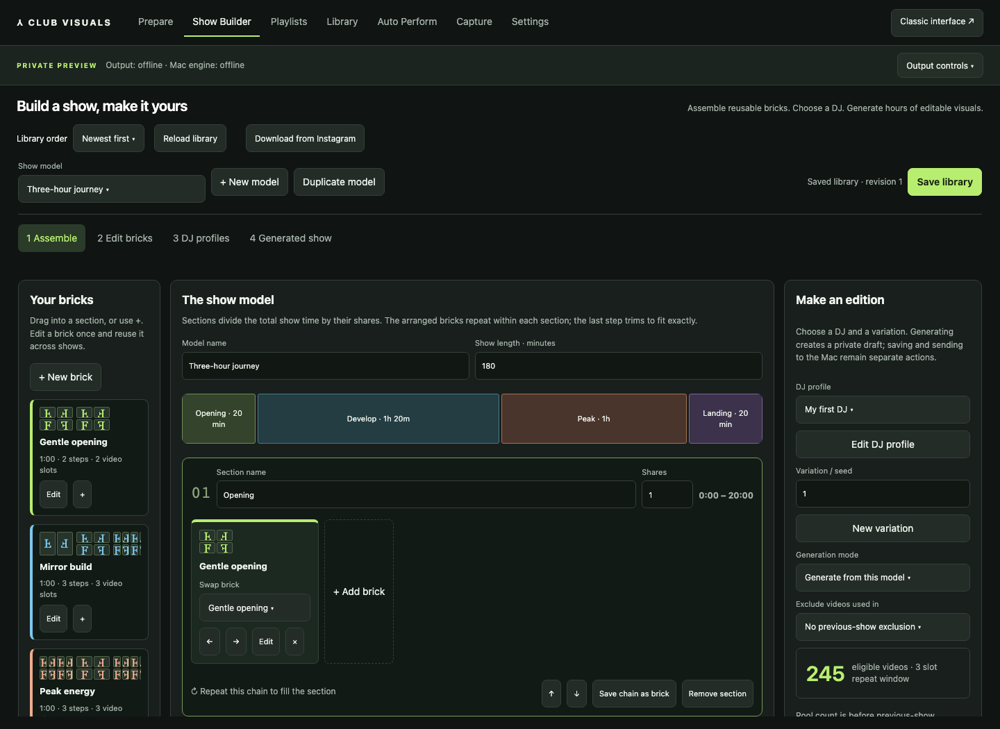

7. Generate shows with Show Builder
Reuse choreography while changing the source pool, DJ identity and performance length.
Understand the three recipe components
A model describes the overall show: length, ordered sections and their relative shares. A brick describes a repeatable chain of clip steps, layouts, transitions and effects. A DJ profile chooses source preferences, pacing, repeat constraints and branding. Generating combines them into a normal editable playlist snapshot.


Generate a first edition
- Open Assemble. Choose an existing model or create one, then set its length in minutes.
- Add and name sections. Set their relative shares; values 1, 4, 3, 1 divide a three-hour show into 20, 80, 60 and 20 minutes.
- Drag bricks from the shelf into sections. Reorder or swap them; a section repeats its chain to fill its share, trimming the final step to fit.
- In Edit bricks, define steps: named video slot, length, layout, mirror pattern, speed, framing, incoming transition and effect windows.
- In DJ profiles, choose themes/colours/types, exclusion terms, reviewed-only filtering, pacing and repeat rules. Empty tag filters allow all otherwise eligible sources.
- Use Save library to store the reusable recipe components.
- Choose a DJ and variation, then Generate show. Read warnings about unavailable sources, skipped branding or trimmed windows.
- Review the result and Save as new playlist for a separate performance edition.
A slot name shares a chosen video within one brick occurrence; a later occurrence can choose another. Slots store the choice role, not a hard-coded file, unless you pin them. Timed layout changes alter the running clip without restarting its source. A new clip step starts its source again.
Review the generated composition

Generated show → Review the show has a full-show playhead, detailed clip timeline and private composition preview. Drag the playhead or enter seconds, m:ss.mmm or h:mm:ss.mmm. Previous/Next clip and ±1 second help with precise review. Play from playhead continues through the show. The timeline's arrow keys step one second; Page Up/Down step a minute; Home/End jump to the limits.
The review inspector's sliders adjust framing, pattern, speed, duration and transition length. If a timed layout change is active, layout edits affect that change. New layout change here inserts another section. These are draft preview changes until Apply changes; Reset changes restores the edition's last applied state. Moving to another clip keeps pending drafts. Apply/Reset handles all pending clips. Apply updates the working edition; Save as new playlist keeps that result.
Undo last edit restores the edition before its last applied review edit. Pending drafts must be applied or reset before loading, generating or saving another edition. Open in playlist editor transfers the show and playhead to the full playlist editor. Save or download important drafts before refreshing.
Make another edition
Replace videos · keep choreography changes media choices while retaining lengths, transitions, layout events and brick effects. The new profile's pacing is ignored in this mode. Explicit independent reflection sources remain pinned. Use Keep this section exactly to preserve a section's existing media, effects and branding; its duration and position must stay fixed.
Pin video slots fixes selected slots to eligible sources and overrides the repeat window for those slots. Exclude videos used in avoids media from a prior saved playlist. The same recipe snapshot, seed/profile and bindings reproduce the same choices independently of how the library is sorted.
Keep reusable recipes separate from performances
Editing a brick affects future generations, not a previously generated playlist. Save chain as brick copies an arranged chain into a new reusable component. Capture playlist clips as brick turns editor entries into a reusable chain with named slots. Download/import library transfers reusable components as JSON; importing loads a draft until Save library. A stale save reports a conflict rather than overwriting another device's recipe changes.
Current limits include 24 hours per show, 10,000 generated clips and one background-effect window at a time. A window can include an independent logo overlay. Arbitrary independent video tracks, smooth tile morphing and the proposed text-based sequence language are separate from the working builder.